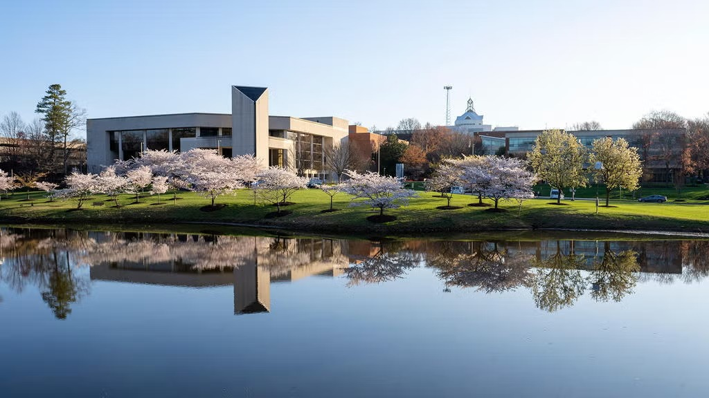

Academic Background
I am currently pursuing a Bachelor of Science in Information Technology at George Mason University, concentrating in Web Application Development.
I graduated from Colgan Highschool in 2022 and was recognized with the Outstanding Student Award for my academic achievements. Later, I got my Associate of Science degree in Computer Information Systems from Northern Virginia Community College in 2024. And now, I am continuing my education at George Mason University to pursue my Bachelor's degree.
To be completely honest, seeing the life at George Mason University the first time was very hesitating. it was a big adjustment for me, since the driving distance from my home was quite long, and finding right buildings for my classes was challenging. However, I have grown to love the campus and the opportunities it provides. I have started to thrive in this environment and look forward to the rest of my academic journey. And to be completely truthful, I have realized how much I love it here and how sad I will be when I graduate and move on from being a student to being in the professional worklife.
I joined so many clubs and organizations during my time at George Mason University, which helped me develop leadership skills and build a strong network of friends and mentors. Now that I go to the Sci Tech campus regularly, I go to the Source Room almost every day, and it is like a safe space for me to hang out in. I also love going to the freedom aquatic center and spending my time there working out, playing badminton and pickleball with my friends, or just to swim.
Overall, my educational experience has been incredibly rewarding, and I am grateful for the knowledge and skills I have gained, and I will miss my student life dearly when I graduate.
George Mason University
